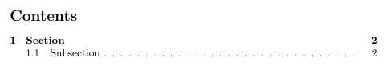
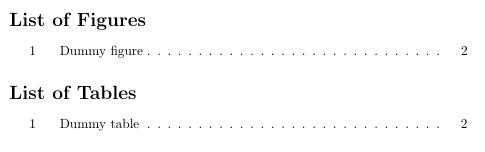

Generating a table of contents can be done with a few simple commands. LaTeX will use the section headings to create the table of contents and there are commands to create a list of figures and a list of tables as well. I will give a small example code to create a table of contents first:
\documentclass{article}
\begin{document}
\tableofcontents
\newpage
\section{Section}
Dummy text
\subsection{Subsection}
Dummy text
\end{document}
After compiling the .tex file two times, you will get the following table of contents:
The generation of a list of figures and tables works the same way. I added a dummy figure and table and put the lists in the appendix of my document
\begin{document}
...
\begin{figure}
\caption{Dummy figure}
\end{figure}
\begin{table}
\caption{Dummy table}
\end{table}
...
\begin{appendix}
\listoffigures
\listoftables
\end{appendix}
\end{document}
After compiling two times again, the lists will be generated like this:
